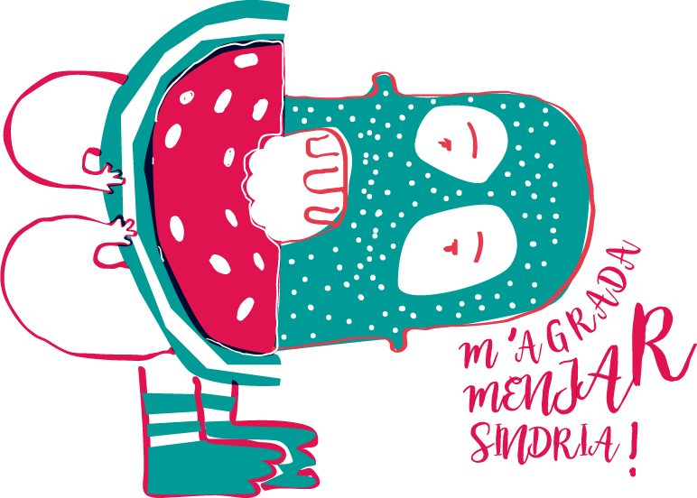

Illustrating children's book about summer and watermelon
La Isla de Papel is a group that I form together with Sara Cuartero, to do what we like the most, practice art. In 2016 we arrived from a long and productive trip through Mexico to settle on the beautiful island of Minorca. To inaugurate such an adventure, we made a fun album for children of a local product, watermelon.
To learn the culture of Menorca, we signed up for a basic Catalan course and the motivation made us want to write a story, and not just write it, illustrate it, layout it and edit it. This is how we did it.
How to tell a story to children through an illustrating book? We investigated from our experience conducting contemporary art workshops in schools and we reached some conclusions.
Summer It is the time that children like the most because of the arrival of vacations and the beach.
Watermelon It is a local product highly valued for its taste and its visual appearance.
Play The interaction questions and answers and the game is what makes children be more attentive when reading a story
Goal Create a short story that proposes a game of imagination to find out where the watermelons come from and stimulate the curiosity of the little ones to taste the seasonal fruit.
The process to find the appropriate illustrations started from a first phase in which the illustrations were more complex, and they worked until they became increasingly simplified, completely eliminating lines and small details, with the intention that they were easy to understand and They will work as a two-ink engraving.
A process that goes from brutalism to simplification. Finding simple shapes that can be superimposed to generate the dark colors and introducing the text as a compositional element.
The watermelon and its seeds arrived in Menorca aboard a ship. They did it from African lands, where this fruit is originally from. In Menorca you will find the necessary conditions to grow: a warm climate and shallow soils in which its roots quickly absorb water. In the Balearic Islands about twelve thousand tons of watermelons are collected every year, and in Alaior they serve the celebrations of "Sa Faroleros".
ScreenplaySara Cuartero
Linguistic correctionMercé Alegre
Design and illustrationCarmen Esperón Solís
Printing and BindingPrinceps Digital S.L.
SupportConsell Insular de Menorca